1990 yılı ile 2020 yılları arasındaki Dünya Üzerindeki Göçmen Stok Analizi
Proje Genel Bakış ve Kapsamı
Birleşmiş Milletler Ekonomik ve Sosyal İşler Departmanındaki Nüfus Bölümü, nüfus sorunlarını uluslararası toplumun dikkatine sunma yetkisinin bir parçası olarak dünya nüfusu hakkında veri kümeleri yayınlar ve küresel demografik eğilimleri analiz eder. 1990’dan 2020’e kadar olan dönemi kapsayan veri kümesi, 233 ülke ve bölge için cinsiyete göre toplam uluslararası göçmen sayısı ve varış yerlerine ilişkin bilgileri içerir. Uluslararası Göçmen Stoku veri kümesinin 2020 verisini üretirken, Dünya üzerinde Türkiye’nin de dahil olduğu en fazla göç alan 12 ülkeyi inceledik.
Veri
Bu veri seti, 1990–2020 yılları arasında 233 ülke ve bölge için göçmen stoku verilerini içerir. Göçmenler, doğdukları ülke dışında yaşayan bireyler olarak tanımlanmıştır. Veriler cinsiyete (kadın/erkek), köken ülkesine ve varış ülkesine göre ayrılmıştır.
Kaynak: Birleşmiş Milletler Ekonomik ve Sosyal İşler Dairesi (UN DESA) Veri Seti: International Migrant Stock 2020
Veri Hakkinda Genel Bilgiler
İçerik Özeti:
Yaş grubu bazlı göçmen dağılımı
Cinsiyete göre toplam göçmen sayıları (Total Males, Females, Both)
Ülke, kıta, bölge sınıflamaları
Uzun dönemli zaman serisi (1990–2024)
Yıllık bazda tahmin edilmiş göçmen sayıları
Kullanım Amaçları:
Göç profillerinin demografik analizi
Ülkeler arası göç hareketlerinin trend analizi
Cinsiyet ve yaşa göre göç eğilimlerinin karşılaştırılması
Tercih Sebebi
Dünya üzerinde 233 farklı ülkeden veri alınması, 1990’dan yılından itibaren başlayarak dünyada yaşanan farklı gelişmeler(çatışma, savaş, ekonomik sebepler) sonucunda dünya göc stoğunun değişimini incelemek istedik.
Ön İşleme
Veri seti Birleşmiş Milletlerin sitesinden alınmış olup veri ön işleme adımları uygulanarak yaş grupları(total), yaş grupları(male) ve yas grupları(female) olarak düzeltilmiştir. Area sutünu eklenerek ülkelerin veri seti içerisinden secilmesini daha kolay alınmasını sağlamıstır.
Analiz-1
# Gerekli kütüphaneleri yüklelibrary(readxl)library(dplyr)
Attaching package: 'dplyr'
The following objects are masked from 'package:stats':
filter, lag
The following objects are masked from 'package:base':
intersect, setdiff, setequal, union
library(tidyr) # drop_na() fonksiyonu buradan gelirlibrary(ggplot2)library(scales)# Excel dosya yolunu belirt (proje klasörü içindeyse böyle yaz)file_path <-"C:/R-packages/undesa_pd_2020_ims_stock_by_age_sex_and_destination_2.xlsx"# Veriyi okudf <-read_excel(file_path, sheet ="Table 1")# Temizle ve hazırladf_clean <- df %>%mutate(Total =as.numeric(`Total(Both)`),Year =as.numeric(Year) ) %>%filter(Year ==2020, Area =="Country") %>%drop_na(Total)
Warning: There was 1 warning in `mutate()`.
ℹ In argument: `Total = as.numeric(`Total(Both)`)`.
Caused by warning:
! Zorlamadan dolayı ortaya çıkan NAs
# En çok göç alan ilk 12 ülkeyi seçdf_top12 <- df_clean %>%arrange(desc(Total)) %>%slice(1:12)# Grafik oluşturggplot(df_top12, aes(x =reorder(`Region, development group, country`, Total), y = Total)) +geom_col(fill ="steelblue") +coord_flip() +geom_text(aes(label =paste0(round(Total /1e6, 1), "M")), hjust =-0.1, size =3.5) +scale_y_continuous(labels =label_number(scale =1e-6, suffix ="M"),expand =expansion(mult =c(0, 0.1))) +labs(title ="Top 12 Countries by Total Migrant Stock in 2020",x ="Country",y ="Total Migrant Stock") +theme_minimal(base_size =13)
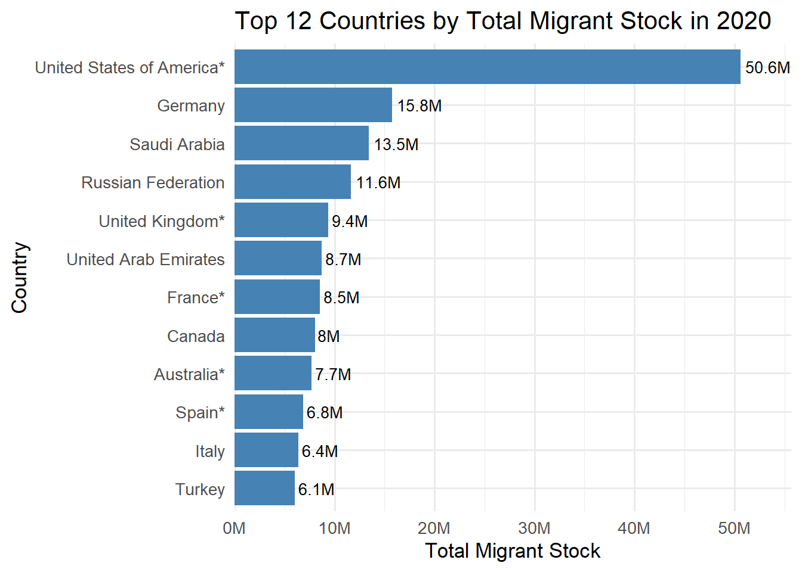
Grafik1: Top 12 Countries by Total Migrant Stock in 2020
1. En yüksek göçmen stoku olan ülke:
United States of America (ABD): 50.6 milyon kişi ile açık ara önde.
Bu rakam, ikinci sıradaki Almanya’nın (15.8M) 3 katından fazla.
ABD’nin küresel cazibe merkezi olması (ekonomi, eğitim, mülteci kabulü vs.) bu farkı açıklıyor.
2. Avrupa ülkeleri ağırlıkta:
İlk 12’de Almanya, Birleşik Krallık, Fransa, İtalya, İspanya gibi birçok Avrupa ülkesi var.
Bu ülkeler tarihsel olarak göç almış, refah düzeyi yüksek, sosyal güvenlik sistemleri gelişmiş ülkeler.
3. Körfez ülkeleri göçmen işgücüyle öne çıkıyor:
Suudi Arabistan (13.5M) ve Birleşik Arap Emirlikleri (8.7M) gibi ülkeler, nüfuslarına oranla çok yüksek göçmen stoku barındırıyor.
Bu göçmenler genellikle inşaat, hizmet, petrol gibi sektörlerde çalışan geçici işçiler.
4. Türkiye 12. sırada:
6.1 milyon kişi ile listede yer alıyor.
Türkiye’nin bu düzeyde göç alması, Suriye iç savaşı sonrası gelişen mülteci akını ve coğrafi konumu ile açıklanabilir.
Analiz-2
2020 Yılı Cinsiyet Bazlı Top 12 Ülkedeki Göçmen Stoğu
R Kodu
# Gerekli kütüphanelerlibrary(readxl)library(dplyr)library(tidyr)library(ggplot2)library(scales)# Dosya yolu ve veri setifile_path <-"C:/R-packages/undesa_pd_2020_ims_stock_by_age_sex_and_destination_2.xlsx"df <-read_excel(file_path, sheet ="Table 1")# Veriyi hazırladf <- df %>%mutate(Total_Female =as.numeric(`Total(Females)`),Total_Male =as.numeric(`Total(Males)`),Year =as.numeric(Year),Total = Total_Female + Total_Male ) %>%filter(Year ==2020, Area =="Country") %>%drop_na(Total)
Warning: There were 2 warnings in `mutate()`.
The first warning was:
ℹ In argument: `Total_Female = as.numeric(`Total(Females)`)`.
Caused by warning:
! Zorlamadan dolayı ortaya çıkan NAs
ℹ Run `dplyr::last_dplyr_warnings()` to see the 1 remaining warning.
# En çok göçmen barındıran ilk 12 ülkedf_top12 <- df %>%arrange(desc(Total)) %>%slice(1:12) %>%select(`Region, development group, country`, Total_Female, Total_Male)# Uzun formata getirdf_long <- df_top12 %>%pivot_longer(cols =c(Total_Female, Total_Male),names_to ="Gender",values_to ="Count") %>%mutate(Gender =ifelse(Gender =="Total_Female", "Female", "Male"))# Grafik oluşturggplot(df_long, aes(x =reorder(`Region, development group, country`, -Count),y = Count, fill = Gender)) +geom_bar(stat ="identity", position =position_dodge(width =0.8), width =0.7) +geom_text(aes(label =paste0(round(Count /1e6, 1), "M")),position =position_dodge(width =0.8),vjust =-0.8, size =3.5) +scale_y_continuous(labels =label_number(scale =1e-6, suffix ="M"),limits =c(0, 30e6),expand =expansion(mult =c(0, 0.15))) +labs(title ="2020 Yılında En Fazla Göçmen Barındıran 12 Ülke (Cinsiyete Göre)",x ="Ülke",y ="Göçmen Sayısı") +theme_minimal(base_size =13) +theme(axis.text.x =element_text(angle =45, hjust =1),legend.title =element_blank(),legend.position ="right")
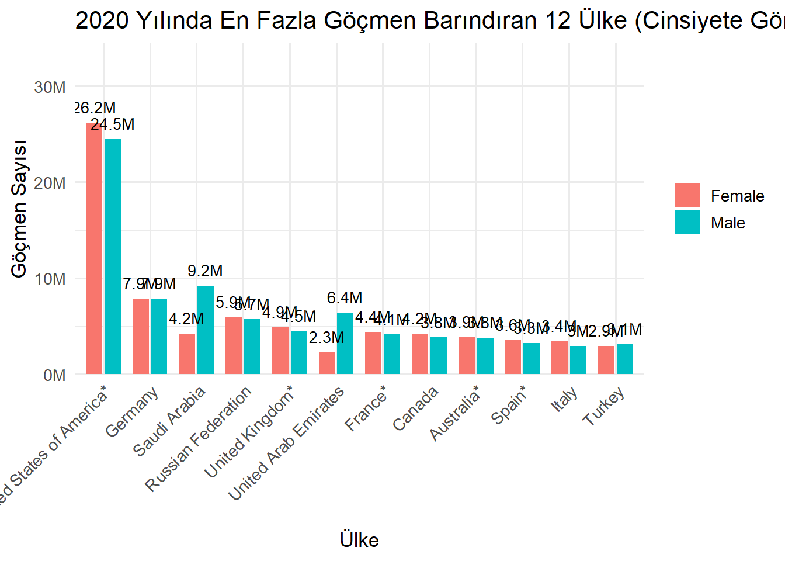
2020 Yılı Cinsiyet Bazlı Top 12 Ülkedeki Göçmen Stoğu Yorumu
🔹 1. ABD (United States of America) en yüksek göçmen nüfusuna sahip*
Kadın göçmen: 26.2 milyon
Erkek göçmen: 24.5 milyon
Aradaki fark az da olsa kadın göçmenler lehine.
Bu, ABD’nin aile birleşimi, eğitim, uzun vadeli yaşam gibi nedenlerle göç alan bir ülke olduğuna işaret eder.
🔹 2. Erkek ağırlıklı göç alan ülkeler:
Suudi Arabistan:
Erkek: 9.2M
Kadın: 4.2M
➤ Göçmen nüfusun %68’i erkek, bu da büyük oranda geçici iş gücü karakterini yansıtır.
Birleşik Arap Emirlikleri:
Erkek: 6.4M
Kadın: 2.3M
➤ Yoğun erkek işçi göçü var. Özellikle inşaat ve hizmet sektörlerinde.
🔹 3. Kadın-Erkek oranı dengeli ülkeler:
Almanya ve Kanada gibi ülkelerde kadın ve erkek göçmen sayıları neredeyse eşit.
Bu, kalıcı göçün, aile göçlerinin ve sosyal uyum politikalarının etkisini gösterir.
🔹 4. Türkiye:
Kadın: 2.9M
Erkek: 3.1M
Fark çok küçük; Türkiye’de göçmenlerin cinsiyet dağılımı dengeli.
Göçmen profilinin büyük ölçüde Suriyeli sığınmacılar olduğunu göz önünde bulundurursak, bu denge aile göçünün yaygınlığına işaret eder.
Analiz-3
2020 Yılında Dünyadaki Göçmen Nüfusun Cinsiyete Göre Dağılımı
R Kodu
# Gerekli kütüphanelerlibrary(readxl)library(dplyr)library(tidyr)library(ggplot2)# Dosya yolu (kendi yolunu yaz)file_path <-"C:/R-packages/undesa_pd_2020_ims_stock_by_age_sex_and_destination_2.xlsx"# Excel'den veriyi okudf <-read_excel(file_path, sheet ="Table 1")# Dünya verisi - 2020 yılıdf_world <- df %>%filter(Year ==2020, `Region, development group, country`=="WORLD") %>%mutate(Female =as.numeric(`Total(Females)`),Male =as.numeric(`Total(Males)`) ) %>%select(Female, Male) %>%pivot_longer(cols =everything(), names_to ="Gender", values_to ="Count") %>%mutate(Percentage =round(Count /sum(Count) *100, 1),Label =paste0(Gender, ": ", Percentage, "%") )# Pasta grafiğiggplot(df_world, aes(x ="", y = Count, fill = Gender)) +geom_bar(stat ="identity", width =1, color ="white") +coord_polar("y", start =0) +geom_text(aes(label = Label),position =position_stack(vjust =0.5), color ="white", size =5) +labs(title ="Gender Distribution of Migrant Stock Worldwide in 2020") +theme_void(base_size =14) +theme(legend.title =element_blank(),plot.title =element_text(hjust =0.5))
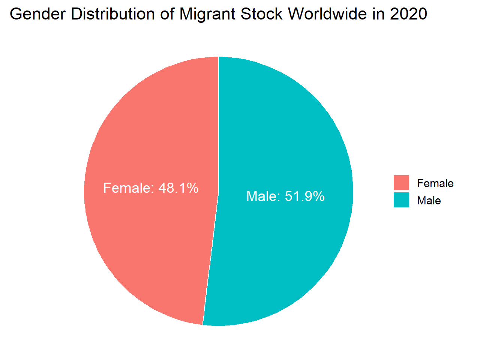
1. Cinsiyet Dağılımı Dengeye Yakın Ama Erkekler Hafif Üstün:
Erkeklerin oranı %51.9 ile kadınlara göre yaklaşık 3.8 puan daha fazla.
Bu fark, çoğunlukla: iş gücü göçü (özellikle inşaat, sanayi, hizmet sektörleri), tek başına göç eden bireylerin erkek ağırlıklı olması gibi nedenlerle açıklanabilir.
2. Kadın Göçmenlerin Yüksekliği Aile ve Eğitim Göçünü Gösteriyor:
Kadın oranının bu kadar yüksek olması, göçün sadece ekonomik değil, aile birleşimi,eğitim amaçlı göç,sığınma ve insani göç gibi faktörleri de içerdiğini gösteriyor.
Toplumsal hizmetler (sağlık, eğitim, koruma) planlanırken bu dağılım dikkate alınmalı.
Özellikle kadın göçmenlerin korunması, istihdama entegrasyonu ve sosyal destek hizmetleri önemlidir.
2020 yılı itibariyle dünya genelindeki uluslararası göçmen nüfusun %51.9’u erkek, %48.1’i kadındır. Bu dağılım, erkeklerin daha çok iş gücü amaçlı göç ettiğini gösterirken, kadın göçmenlerin oranının da yüksekliği aile birleşimi, eğitim ve sığınma gibi insani göç türlerinin önemli bir paya sahip olduğunu ortaya koymaktadır.
Analiz-4
2020 Yılında Dünyadaki Göçmen Nüfusun Cinsiyete Göre Dağılımı
R Kodu
# Gerekli kütüphanelerlibrary(readxl)library(dplyr)library(ggplot2)library(scales)# Dosya yolu ve verifile_path <-"C:/R-packages/undesa_pd_2020_ims_stock_by_age_sex_and_destination_2.xlsx"df <-read_excel(file_path, sheet ="Table 1")# 2020 yılı, ülke bazlı verilerdf_clean <- df %>%filter(Year ==2020, Area =="Country") %>%mutate(Male =as.numeric(`Total(Males)`),Female =as.numeric(`Total(Females)`) ) %>%drop_na(Male, Female)
Warning: There were 2 warnings in `mutate()`.
The first warning was:
ℹ In argument: `Male = as.numeric(`Total(Males)`)`.
Caused by warning:
! Zorlamadan dolayı ortaya çıkan NAs
ℹ Run `dplyr::last_dplyr_warnings()` to see the 1 remaining warning.
# Scatter plotggplot(df_clean, aes(x = Male, y = Female)) +geom_point(color ="steelblue", size =2) +geom_abline(intercept =0, slope =1, linetype ="dashed", color ="gray") +scale_x_continuous(labels =label_number(scale =1e-6, suffix ="M")) +scale_y_continuous(labels =label_number(scale =1e-6, suffix ="M")) +labs(title ="Migrant Stock by Gender Across Countries (2020)",x ="Male Migrant Count (Millions)",y ="Female Migrant Count (Millions)" ) +theme_minimal(base_size =14)
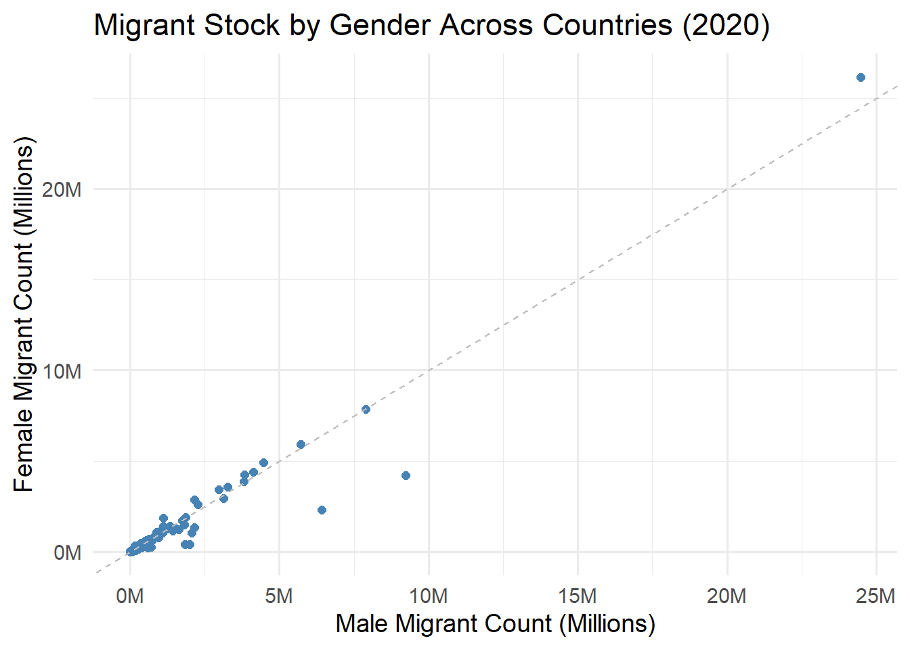
Bu grafik, 2020 yılında her ülkenin göçmen stokunun erkek ve kadınlara göre dağılımını karşılaştırıyor.
X ekseni: Erkek göçmen sayısı (milyon cinsinden)
Y ekseni: Kadın göçmen sayısı (milyon cinsinden)
Her nokta: Bir ülkeyi temsil ediyor
Kesikli diyagonal çizgi: Erkek ve kadın göçmen sayısının eşit olduğu ülkeleri simgeler
Denge çizgisine yakın olan ülkeler: Noktalar büyük ölçüde bu çizgiye yakın konumlanmış.
Bu, çoğu ülkede göçmen kadın ve erkek sayısının dengeli olduğunu gösterir.
Bu ülkeler genelde gelişmiş, istikrarlı göç politikaları olan ülkelerdir (örneğin: Almanya, Fransa, Kanada).
2. Denge çizgisinin altında kalan ülkeler:
Bazı ülkeler diyagonal çizginin altında, yani erkek göçmen sayısı kadınlardan yüksek.
Örnek ülkeler: Suudi Arabistan, Birleşik Arap Emirlikleri gibi Körfez ülkeleri
Bu ülkelerde göçmenlerin çoğu erkek işçilerden oluşur (inşaat, sanayi, geçici çalışma vizeleri gibi nedenlerle).
3. Üstteki tek uç nokta (aşırı değer):
Sağ üstteki belirgin nokta ABD (United States of America*)’dır.
Hem erkek hem kadın göçmen sayısında açık ara en yüksek ülke.
Bu durum, ABD’nin uzun süredir göç alan küresel bir merkez olmasıyla ilgilidir.
Grafik genel olarak göçmen stokunun cinsiyete göre çok aşırı dengesiz dağılmadığını,
Ancak bazı bölgesel ve ekonomik faktörlere bağlı olarak erkek ağırlıklı göçmen profillerinin ortaya çıktığını gösteriyor.
En büyük sapmalar, ekonomik amaçlı tekil erkek göçlerinin yoğun olduğu ülkelerde gözleniyor.
Analiz-5
2020 – Yaş Gruplarının Toplam Göçmen Stokundaki Payı (Log Ölçek)
R Kodu
#| label: age-group-scatter#| fig-cap: "2020 – Migrant Share by Age Group (Log Scale)"#| warning: false#| message: falselibrary(readxl)library(dplyr)library(tidyr)library(ggplot2)library(scales)# Dosya yolu (kendi dosya yolunuza göre güncelleyin)file_path <-"C:/R-packages/undesa_pd_2020_ims_stock_by_age_sex_and_destination_2.xlsx"df <-read_excel(file_path, sheet ="Table 1")# Yaş grubu sütunlarıage_cols <-c("0-4 total", "5-9 total", "10-14 total", "15-19 total", "20-24 total","25-29 total", "30-34 total", "35-39 total", "40-44 total", "45-49 total","50-54 total", "55-59 total", "60-64 total", "65-69 total", "70-74 total", "75+ total")# Veriyi hazırlamadf_age <- df %>%filter(Year ==2020, Area =="Country") %>%select(Country =`Region, development group, country`, Total =`Total(Both)`, all_of(age_cols)) %>%mutate(across(all_of(age_cols), as.numeric),Total =as.numeric(Total)) %>%drop_na()
Warning: There were 17 warnings in `mutate()`.
The first warning was:
ℹ In argument: `across(all_of(age_cols), as.numeric)`.
Caused by warning:
! Zorlamadan dolayı ortaya çıkan NAs
ℹ Run `dplyr::last_dplyr_warnings()` to see the 16 remaining warnings.
Warning: Removed 1 row containing missing values or values outside the scale range
(`geom_point()`).
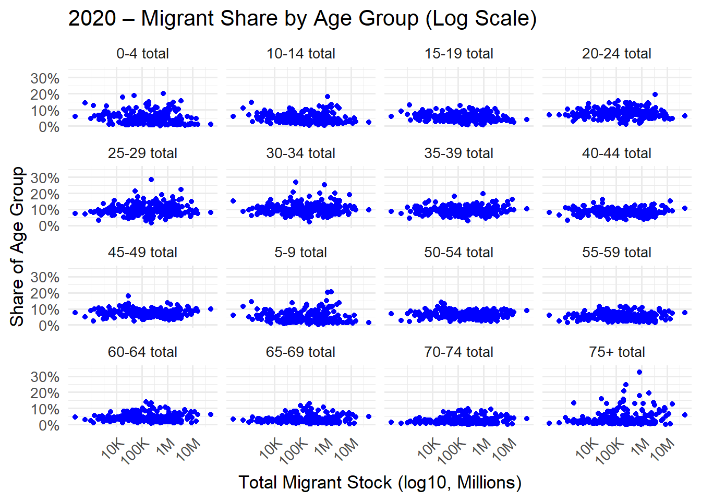
Tüm yaş gruplarında, göçmen sayısı arttıkça oranlar genellikle %2–%10 arasında yoğunlaşıyor.Grafiklerin çoğunda, aşırı uç değerler hariç ülkelerin büyük kısmı aynı oransal bantta kalıyor.
Yaş Grubu Karşılaştırmaları:
25–44 yaş aralığı (özellikle 25–29, 30–34, 35–39 yaş):
Oranlar en yüksek seviyede (%10–%15).
Bu da göçmenlerin büyük kısmının çalışma çağında olduğunu gösteriyor.
Göç çoğunlukla ekonomik, eğitim veya iş gücü temelli olabilir.
0–14 yaş grubu:
Oranlar daha düşük ancak sabit (çoğunlukla %5–%10).
Bu çocukların muhtemelen aile göçü ile taşındığını düşündürür.
65 yaş ve üstü gruplar:
Oranlar oldukça düşük (%0–%5).
Bu, göçmenlerin çoğunluğunun yaşlı nüfustan oluşmadığını gösteriyor. Ancak bazı ülkelerde outlier noktalar var — bu da bazı ülkelerde emeklilik veya aile birleşimi gibi nedenlerle yaşlı göçmenlerin daha fazla olduğunu gösterebilir.
Log eksende geniş yayılım, ülkeler arasında çok büyük farklar olduğunu gösteriyor (örneğin: ABD ile küçük ada devletleri arasında).
Analiz-6
2020 – Yaş Gruplarının Boxplot
R Kodu
# Gerekli kütüphanelerlibrary(readxl)library(dplyr)library(tidyr)library(ggplot2)library(scales)# Excel dosyasını okufile_path <-"C:/R-packages/undesa_pd_2020_ims_stock_by_age_sex_and_destination_2.xlsx"df <-read_excel(file_path, sheet ="Table 1")# 2020 yılı verilerini al, sayısal dönüşüm yapdf_filtered <- df %>%filter(Year ==2020, Area =="Country") %>%mutate(Total =as.numeric(`Total(Both)`)) %>%drop_na(Total)
Warning: There was 1 warning in `mutate()`.
ℹ In argument: `Total = as.numeric(`Total(Both)`)`.
Caused by warning:
! Zorlamadan dolayı ortaya çıkan NAs
# En fazla göçmen barındıran ilk 12 ülkeyi bultop12_countries <- df_filtered %>%arrange(desc(Total)) %>%slice(1:12) %>%pull(`Region, development group, country`)# Yaş grubu sütunlarını seç (örnek: "0-4", "5-9", ...)age_columns <-grep("^[0-9]+-[0-9]+", names(df_filtered), value =TRUE)# İlk 12 ülkeye ait yaş grubu verisini uzun formata çevirdf_age <- df_filtered %>%filter(`Region, development group, country`%in% top12_countries) %>%select(`Region, development group, country`, all_of(age_columns)) %>%pivot_longer(cols =-`Region, development group, country`,names_to ="Age_Group",values_to ="Count" ) %>%mutate(Count =as.numeric(Count)) %>%drop_na()# Boxplot oluşturggplot(df_age, aes(x =`Region, development group, country`, y = Count)) +geom_boxplot(fill ="lightblue") +scale_y_continuous(labels =label_number(scale =1e-6, suffix ="M")) +labs(title ="Top 12 Countries – Migrant Distribution by Age Group (2020)",x ="Country",y ="Migrant Count (per Age Group)" ) +theme_minimal(base_size =12) +theme(axis.text.x =element_text(angle =45, hjust =1))
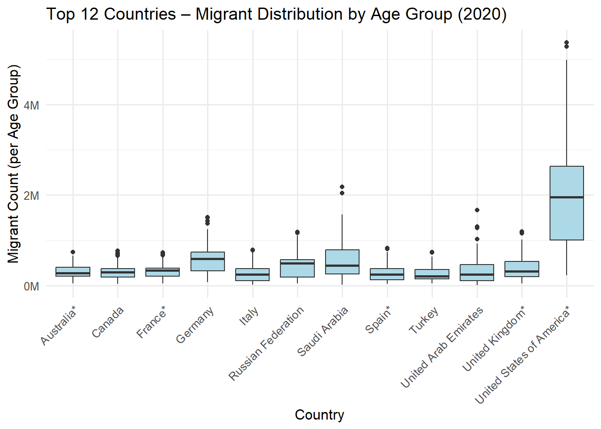
🇺🇸 United States of America*
Göçmen dağılımı diğer ülkelere kıyasla çok daha yüksek ve geniş.
Medyanı yaklaşık 2 milyon.
Outlier’lar çok fazla ve yüksek değerli, bu da bazı yaş gruplarında (örneğin 30–44) göçmen yoğunluğunun çok yüksek olduğunu gösteriyor.
ABD’nin göçmen kabul politikalarının her yaş grubunu kapsadığını, ancak bazı gruplarda (çalışma çağı) yığılma olduğunu düşündürür.
🇸🇦 Suudi Arabistan
Görece yüksek medyan ve outlier’lar var.
Bu, belirli yaş gruplarında (özellikle iş gücü çağında) göçmenlerin yoğunlaştığını gösteriyor.
Erkek ve çalışma çağındaki göçmenlerin baskın olduğu daha önceki grafiği destekler.
🇩🇪 Germany
Medyan göçmen sayısı yüksek ve kutu genişliği diğer Avrupa ülkelerine göre daha fazla.
Almanya’daki yaş grubu göçmen dağılımı daha çeşitli, ama bazı yaş aralıklarında yığılma mevcut.
🇹🇷 Turkey
Göçmen sayısı düşük, dağılım dar; medyan yaklaşık 200–300 bin.
Yaş grupları arasında göçmen sayısı çok fazla farklılık göstermiyor (homojen).
🟨 Genel olarak Avrupa ülkeleri:
Kutu grafikler nispeten kısa, medyanlar daha düşük.
Bu ülkelerde göçmen sayısı daha dengeli ve yaş grupları arasında uçurum yok.
Warning: There was 1 warning in `mutate()`.
ℹ In argument: `TotalBoth = as.numeric(`Total(Both)`)`.
Caused by warning:
! Zorlamadan dolayı ortaya çıkan NAs
# 2020 yılına göre en fazla göçmen alan 12 ülkeyi bultop12_countries <- df %>%filter(Year ==2020) %>%arrange(desc(TotalBoth)) %>%slice(1:12) %>%pull(`Region, development group, country`)# Bu ülkelerin tüm yıllarını aldf_top12_years <- df %>%filter(`Region, development group, country`%in% top12_countries)# Grafik çizggplot(df_top12_years, aes(x =`Region, development group, country`, y = TotalBoth)) +geom_boxplot(fill ="lightgreen") +scale_y_continuous(labels =label_number(scale =1e-6, suffix ="M")) +labs(title ="Top 12 Countries – Migrant Stock Distribution Across Years (1990–2020)",x ="Country",y ="Total Migrant Stock" ) +theme_minimal(base_size =12) +theme(axis.text.x =element_text(angle =45, hjust =1))
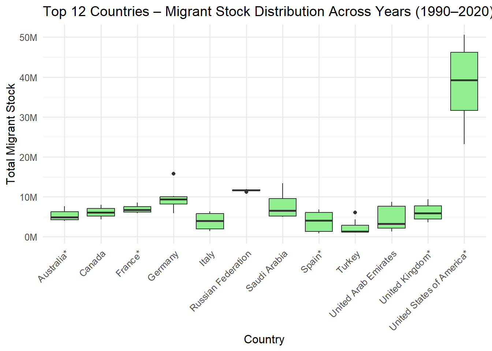
Ülke Bazlı Gözlemler:
🇺🇸 United States of America*
Açık ara en yüksek göçmen stokuna sahip ülke.
Medyan yaklaşık 35–40 milyon.
Boxplot yüksek: bu da yıllar içinde ciddi artış olduğunu ve bazı dönemlerde sıçrama yaşandığını gösterir.
En yüksek değeri 2020’de görmüş olabilir (50M+).
🇩🇪 Germany
Göçmen sayısı istikrarlı şekilde yüksek.
Medyan yaklaşık 9–10 milyon.
Göçmen politikaları, AB içi hareketlilik ve sığınmacı kabulleri bu dağılıma katkı sağlar.
🇸🇦 Saudi Arabia
Boxplot geniş → göçmen sayısı zaman içinde ciddi dalgalanmış.
Özellikle bazı yıllarda (muhtemelen 2000 sonrası) ani artışlar var (iş gücü talebi kaynaklı).
🇦🇪 United Arab Emirates
Orta düzeyde medyan (~6M), ancak değişkenlik çok → geçici iş gücü hareketliliği etkili.
Aykırı değerler, yoğun göç aldığı kısa dönemleri yansıtır.
🇹🇷 Turkey
En alttaki kutulardan biri.
Medyanı düşük, göçmen sayısı 1990–2010 arası çok sabit, 2010 sonrası artış olabilir.
Bu artış, Suriye iç savaşı sonrası göçmen akışı ile ilişkilendirilebilir.
Warning: There were 2 warnings in `mutate()`.
The first warning was:
ℹ In argument: `Total_Female = as.numeric(`Total(Females)`)`.
Caused by warning:
! Zorlamadan dolayı ortaya çıkan NAs
ℹ Run `dplyr::last_dplyr_warnings()` to see the 1 remaining warning.
# En yüksek toplam göçmen stoğuna sahip ilk 12 ülkeyi seçtop12_countries <- df_2020 %>%arrange(desc(Total)) %>%slice(1:12)# Uzun formata çevir (kadın–erkek ayırımı için)df_long <- top12_countries %>%select(`Region, development group, country`, Total_Female, Total_Male) %>%pivot_longer(cols =c(Total_Female, Total_Male),names_to ="Gender",values_to ="Count") %>%mutate(Gender =ifelse(Gender =="Total_Female", "Female", "Male"))# Grafik oluştur (boxplot)ggplot(df_long, aes(x = Gender, y = Count, fill = Gender)) +geom_boxplot() +scale_y_continuous(labels =label_number(scale =1e-6, suffix ="M")) +labs(title ="Top 12 Countries – Migrant Stock Distribution by Gender (2020)",x ="Gender",y ="Migrant Stock" ) +theme_minimal(base_size =12)
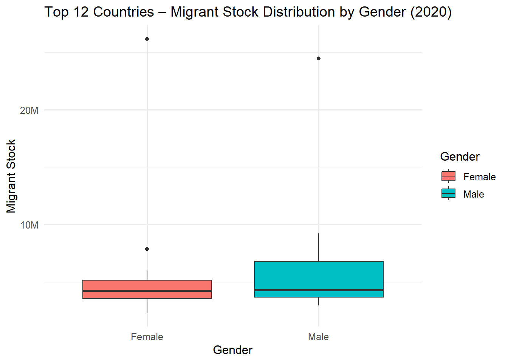
1. Erkek (Male) göçmen stokları kadınlara göre daha yüksek
Medyan değer erkeklerde daha yukarıda (~8-9M), kadınlarda daha düşük (~5M).
Kutu genişliği erkeklerde daha fazla: bazı ülkelerde çok daha fazla erkek göçmen var.
2. Aykırı değerler (outliers)
Her iki cinsiyette de yüksek değerli aykırı ülkeler var → bu muhtemelen ABD ve Körfez ülkeleri.
Kadın göçmen stokunda bir ülke (muhtemelen ABD) 25 milyon civarında göçmenle aykırı olmuş.
3. Göçmenlik cinsiyete göre farklılaşıyor
Erkek göçmenlerin dağılımı daha geniş: bu durum özellikle geçici iş gücü göçünün yoğun olduğu ülkelerle ilişkilendirilebilir (örneğin Suudi Arabistan, BAE).
Kadın göçmenlerin dağılımı daha sıkışık ve merkezde → bu da daha dengeli veya aile temelli göçü yansıtabilir.
2020 verilerine göre, 12 ülke arasında erkek göçmen stokunun dağılımı daha geniş ve daha yüksek medyan değere sahiptir. Bu durum, özellikle geçici iş gücüne dayalı göç alan ülkelerde erkeklerin daha baskın olduğu bir göçmen profiline işaret etmektedir. Öte yandan, kadın göçmenlerin dağılımı daha dar olup, görece daha dengeli bir yapıyı yansıtmaktadır. Her iki grupta da aykırı değer olarak göze çarpan ülke büyük olasılıkla Amerika Birleşik Devletleri’dir.
Toplam uluslararası göçmen sayısı (milyon kişi cinsinden)
Gözlemlenen Eğilim:
Göçmen sayısı 1990’dan 2020’ye kadar her on yılda belirgin bir şekilde artmıştır.
Artış lineer değil, ivmeli: 2000 sonrası artış hızı dikkat çekici şekilde yükselmiştir.
Yıllara Göre Toplam Göçmen Sayısı:
Yıl Tahmini Göçmen Stoku
1990 ~152 milyon
2000 ~174 milyon
2010 ~222 milyon
2020 280.6 milyon
🔺 30 yılda %85’ten fazla artış!
🧠 Olası Nedenler:
1990 sonrası küreselleşmenin hızlanması
AB genişlemesi ve serbest dolaşım
Suriye İç Savaşı, Afganistan, Irak gibi krizler
İklim değişikliği ve ekonomik eşitsizlik
Nitelikli iş gücü ve eğitim göçü artışı
Yumuşak yeşil çizgi ve net etiket → 2020 değeri vurgulanmış (280.6M)
Ana trendi anlatmak için çok uygun: “Dünyada göçmen sayısı hızlı şekilde artıyor.”
“1990 yılında dünya genelindeki uluslararası göçmen stoku yaklaşık 152 milyon iken, bu sayı 2020 yılında 280 milyonu aşmıştır. Son 30 yılda yaşanan bu dramatik artış, hem ekonomik fırsatlar hem de siyasi ve çevresel zorunluluklarla şekillenmiştir.”
Analiz-10
2020 – Yaş Gruplarının Boxplot
R Kodu
# Gerekli kütüphanelerlibrary(readxl)library(dplyr)library(ggplot2)library(scales)# 1. Veriyi oku ve temizlefile_path <-"C:/R-packages/undesa_pd_2020_ims_stock_by_age_sex_and_destination_2.xlsx"df <-read_excel(file_path, sheet ="Table 1")names(df) <-trimws(names(df)) # boşlukları temizledf_world <- df %>%filter(`Region, development group, country`=="WORLD") %>%mutate(Year =as.numeric(Year),Total =as.numeric(`Total(Both)`) ) %>%drop_na(Year, Total)# 2. Doğrusal regresyon modeli oluşturmodel <-lm(Total ~ Year, data = df_world)# 3. 2024 yılı için tahmin alnew_data <-data.frame(Year =2024)pred_2024 <-predict(model, newdata = new_data)# 4. Tahmini veriyi df'ye ekledf_world_pred <-bind_rows( df_world,data.frame(Year =2024, Total = pred_2024))# 5. Grafik çizimiggplot(df_world_pred, aes(x = Year, y = Total)) +geom_point(color ="darkgreen", size =2) +geom_line(data = df_world, color ="darkgreen", linewidth =1) +geom_smooth(data = df_world, method ="lm", se =TRUE, color ="red", linetype ="dashed") +geom_point(data =filter(df_world_pred, Year ==2024), color ="blue", size =3) +geom_text(data =filter(df_world_pred, Year ==2024),aes(label =paste0("Tahmin (2024): ", round(Total /1e6), "M")),vjust =-1, hjust =1, size =4, color ="blue" ) +scale_y_continuous(labels =label_number(scale =1e-6, suffix ="M"),expand =expansion(mult =c(0, 0.15)) ) +scale_x_continuous(breaks =seq(1990, 2024, by =5) # X ekseninde 2024 dahil edilir ) +labs(title ="1990–2020 Dünya Göçmen Stoku ve 2024 Tahmini",subtitle ="Kırmızı çizgi: regresyon eğrisi | Mavi nokta: 2024 tahmini",x ="Yıl",y ="Toplam Göçmen Sayısı (Milyon)" ) +theme_minimal(base_size =13)
`geom_smooth()` using formula = 'y ~ x'
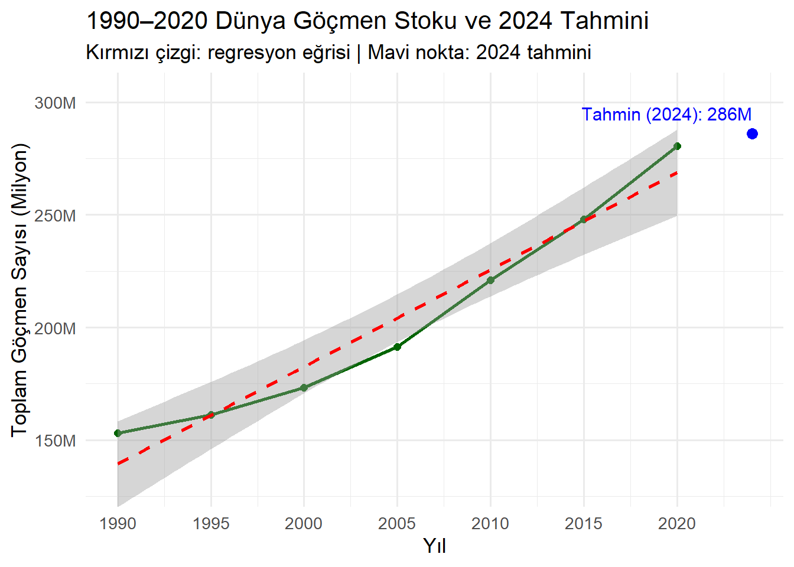
2024 Tahmini:
Tahmin edilen göçmen sayısı: 286 milyon
Gerçek 2020 verisi: ~280 milyon
Bu, göçmen stokunun 2020–2024 arasında yaklaşık 6 milyon artacağı anlamına gelir.
Regresyon eğrisi (kırmızı):
1990–2020 arası veriye dayalı tahmin üretir.
Gözlemlerle (yeşil çizgi) oldukça uyumludur ancak 2020 sonrası sapmaların artabileceği göz önünde bulundurulmalıdır.
Trend Analizi:
Yıl Göçmen Sayısı (Milyon)
1990 ~152M
2000 ~174M
2010 ~222M
2020 ~281M
2024 286M (tahmin)
Grafik, dünya genelinde uluslararası göçmen stokunun sürekli arttığını ve bu artışın gelecekte de devam etmesinin beklendiğini göstermektedir. 2024 tahminine göre, göçmen sayısı yaklaşık 286 milyona ulaşacaktır. Bu artış eğilimi, savaşlar, ekonomik eşitsizlikler, iklim değişikliği gibi küresel dinamiklerin göçü teşvik ettiğini ortaya koymaktadır.
Analiz-11
2020 – Yaş Gruplarının Boxplot
R Kodu
# Gerekli kütüphanelerlibrary(readxl)library(dplyr)library(ggplot2)library(scales)# 1. Veriyi okufile_path <-"C:/R-packages/undesa_pd_2020_ims_stock_by_age_sex_and_destination_2.xlsx"df <-read_excel(file_path, sheet ="Table 1")names(df) <-trimws(names(df)) # boşlukları temizle# 2. Türkiye verisini filtrele ve temizledf_tr <- df %>%filter(`Region, development group, country`=="Turkey") %>%mutate(Year =as.numeric(Year),Total =as.numeric(`Total(Both)`) ) %>%drop_na(Year, Total)# 3. 2020 yılını ayrı aldf_2020 <- df_tr %>%filter(Year ==2020)# 4. Grafikggplot(df_tr, aes(x = Year, y = Total)) +geom_line(color ="firebrick", linewidth =1.2) +geom_point(color ="firebrick", size =2) +geom_text(data = df_2020,aes(label =paste0(round(Total /1e6, 1), "M")),vjust =-1, color ="firebrick", size =4 ) +scale_y_continuous(labels =label_number(scale =1e-6, suffix ="M"),limits =c(0, 8000000) # Y eksenini 0–8M arası sınırla ) +labs(title ="1990–2020 Arası Türkiye'deki Göçmen Stoku",x ="Yıl",y ="Toplam Göçmen Sayısı (Milyon)" ) +theme_minimal(base_size =13)
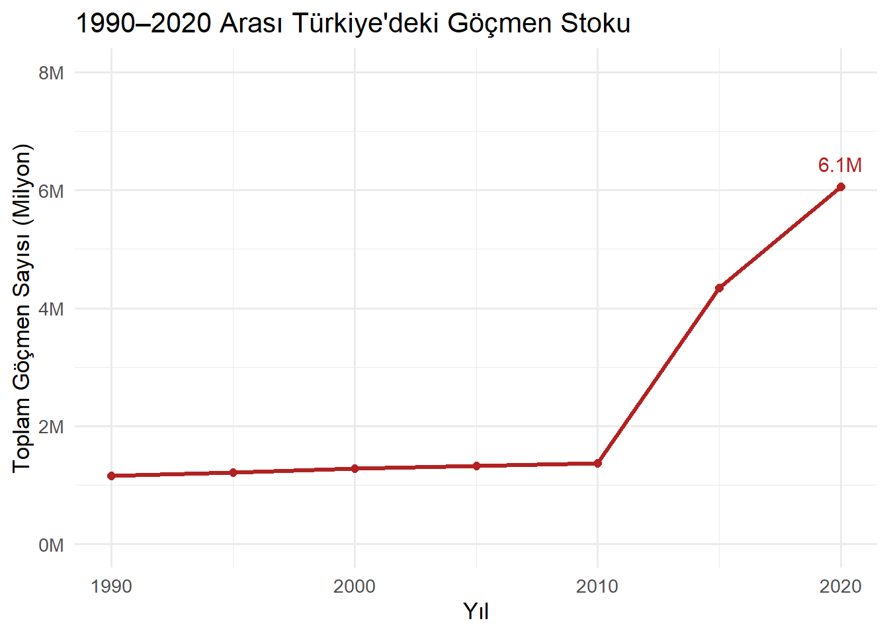
Dikkat Çekici Artış:
1990–2010 arası göçmen sayısı oldukça sabit (~1.3 milyon).
2010–2020 arasında çok keskin bir artış gözlenmiş:
2010: ~1.4 milyon
2015: ~4.5 milyon
2020: 6.1 milyon
Toplam Artış:
1990–2010: +0.2M (20 yılda küçük artış)
2010–2020: +4.7M (10 yılda 3 kattan fazla artış)
🧠 Olası Nedenler:
2010 Sonrası Artışın Sebebi:
Suriye İç Savaşı (2011 sonrası):
Türkiye’ye kitlesel sığınmacı akını başlamıştır.
Coğrafi Konum:
Avrupa’ya geçiş noktası olarak stratejik bir yerde bulunması.
Açık kapı politikası (özellikle ilk yıllarda)
Geçici koruma statüsü ve kayıtlı göçmenlerin artışı
Grafik Özellikleri:
Kırmızı çizgi ile verilmiş trend net bir şekilde gözüküyor.
2020 değeri açıkça vurgulanmış: 6.1 milyon
Y-ekseni milyon cinsinden verilmiş ve değişimi rahat takip etmeyi sağlıyor.
1990’dan 2010’a kadar Türkiye’deki göçmen stoku yaklaşık 1.3 milyon civarında sabit kalmışken, 2010 sonrası dönemde belirgin bir artış gözlemlenmiştir. Özellikle Suriye İç Savaşı’nın etkisiyle 2020 yılına gelindiğinde bu sayı 6.1 milyona ulaşmıştır. Bu dramatik artış, Türkiye’nin kriz bölgelerine yakınlığı ve göç rotası üzerindeki konumu ile açıklanabilir.
Analiz-12
2020 – Yaş Gruplarının Boxplot
R Kodu
# Gerekli kütüphanelerlibrary(readxl)library(dplyr)library(tidyr)library(ggplot2)library(stringr)library(scales)# 1. Veri dosyasını okufile_path <-"C:/R-packages/undesa_pd_2020_ims_stock_by_age_sex_and_destination_2.xlsx"df <-read_excel(file_path, sheet ="Table 1")names(df) <-trimws(names(df)) # Başlıklardaki boşlukları temizle# 2. Yaş grubu sütunlarını bulage_cols <-names(df)[str_detect(names(df), "^[0-9]{1,2}-[0-9]{1,2} total$|^75\\+ total$")]# 3. Türkiye'nin 2020 yılı yaş dağılımını aldf_tr_age <- df %>%filter(`Region, development group, country`=="Turkey", Year ==2020) %>%select(all_of(age_cols)) %>%pivot_longer(cols =everything(),names_to ="AgeGroup",values_to ="Count") %>%mutate(AgeGroup =str_replace(AgeGroup, " total", ""),Count =as.numeric(Count),CountM = Count /1e6# milyon cinsinden ) %>%drop_na()# 4. Grafik çizggplot(df_tr_age, aes(x = AgeGroup, y = Count)) +geom_col(fill ="steelblue") +geom_text(aes(label =sprintf("%.1fM", CountM)),vjust =-0.5, size =3.8, color ="black") +scale_y_continuous(limits =c(0, 8e5),labels =label_number(scale =1e-6, suffix ="M") ) +labs(title ="2020 Türkiye Göçmen Stoku - Yaş Gruplarına Göre Dağılım",x ="Yaş Grubu",y ="Göçmen Sayısı (Milyon)" ) +theme_minimal(base_size =13) +theme(axis.text.x =element_text(angle =45, hjust =1))
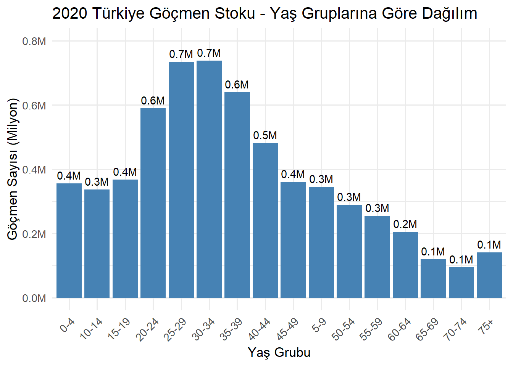
🔹 En Yoğun Yaş Grupları:
25–29 yaş ve 30–34 yaş aralıkları her biri ~0.7 milyon kişiyle en yüksek göçmen sayısına sahip.
Ardından gelen gruplar:
20–24 yaş → 0.6M
35–39 yaş → 0.6M
🟩 Bu gruplar, genel olarak çalışma çağındaki nüfusu temsil eder.
🔹 Çocuk ve Ergen Grupları:
0–4 yaş: 0.4M
5–9 yaş: 0.3M
10–14 yaş: 0.3M
📌 Bu değerler, aile göçü veya doğum sonrası göçmen çocukların artışını işaret eder.
🔹 Yaşlı Gruplar:
65 yaş üzeri toplam: ~0.3M (dağıtılmış: 65–69, 70–74, 75+)
Görece daha düşük: göçmenlerin yaşlı bireyleri daha az temsil ettiği anlaşılır.
📈 Genel Dağılım Yorumu:
Göçmen stokunun büyük kısmı 20–39 yaş aralığında yoğunlaşmaktadır.
Bu durum, Türkiye’deki göçmen nüfusun çoğunlukla ekonomik nedenlerle gelen, genç ve üretken bireylerden oluştuğunu göstermektedir.
Ayrıca, çocuk yaş gruplarındaki sayı da yüksek olduğundan, aile göçü veya çocuk doğumu sonrası kayıtlı nüfus etkisi de söz konusudur.
2020 yılında Türkiye’deki göçmen nüfusu büyük oranda 20–39 yaş arasındaki bireylerden oluşmaktadır. Bu gruplar toplam göçmen stokunun yaklaşık yarısını oluştururken, 0–14 yaş arası çocuk göçmenler de önemli bir paya sahiptir. Yaşlı göçmen oranının oldukça düşük olması, Türkiye’nin daha çok çalışma çağındaki bireyleri çeken bir göç ülkesi olduğunu göstermektedir.
Analiz-13
2020 – Yaş Gruplarının Boxplot
R Kodu
# Gerekli kütüphanelerlibrary(readxl)library(ggplot2)library(dplyr)# 1. Dosya yolufile_path <-"C:/R-packages/undesa_pd_2020_ims_stock_by_age_sex_and_destination_2.xlsx"# 2. AN2:BE2 hücre aralığından veriyi oku (sayıların olduğu satır)df_raw <-read_excel(file_path, sheet ="Table 1", range ="AN2:BE2", col_names =FALSE)
# 3. Erkek ve kadın sayısını almale_count <-as.numeric(df_raw[[1]]) # AN2 sütunufemale_count <-as.numeric(df_raw[[18]]) # BE2 sütunu# 4. Veri çerçevesi oluşturdf_gender <-data.frame(Gender =c("Erkek", "Kadın"),Count =c(male_count, female_count))# 5. Pasta grafiği oluşturggplot(df_gender, aes(x ="", y = Count, fill = Gender)) +geom_col(width =1, color ="white") +coord_polar(theta ="y") +geom_text(aes(label =paste0(Gender, ": ", round(Count /sum(Count) *100, 1), "%")),position =position_stack(vjust =0.5),size =5, color ="white") +scale_fill_manual(values =c("Kadın"="#FF6F61", "Erkek"="#4F9CD3")) +labs(title ="2020 Yılında Türkiye'deki Göçmen Nüfusunun Cinsiyete Göre Dağılımı",x =NULL, y =NULL, fill ="Cinsiyet" ) +theme_void(base_size =13)
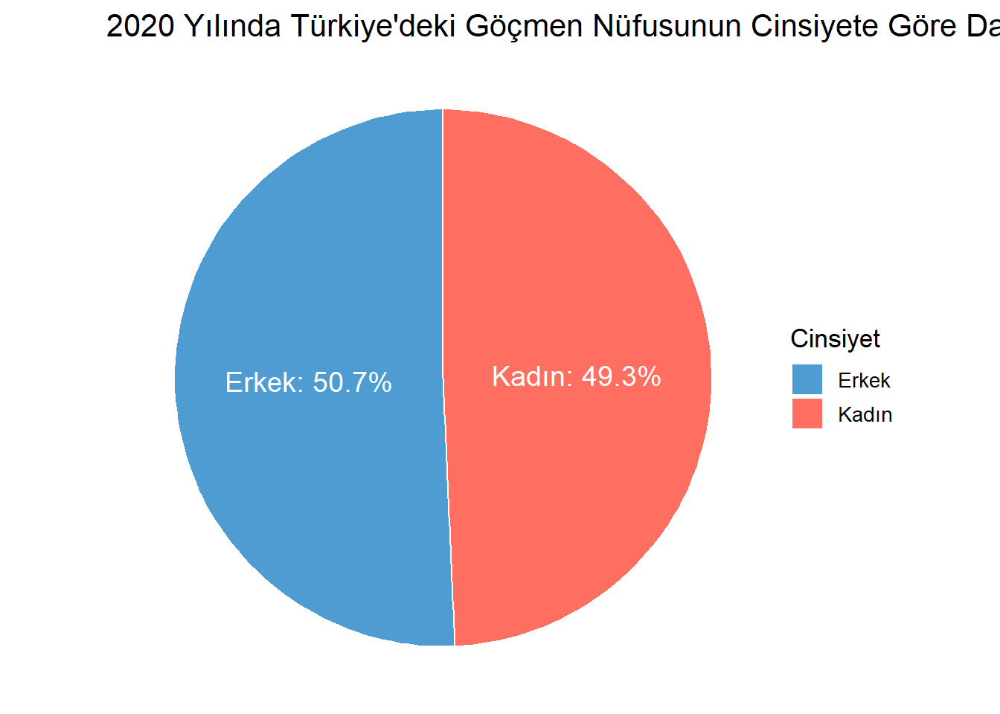
Veri Özeti:
Cinsiyet Oran (%)
Erkek 50.7%
Kadın 49.3%
🔍 Yorum ve Değerlendirme:
🔹 1. Cinsiyet Dengesi Çok Yakın:
Erkek göçmen oranı yalnızca %1.4 daha fazla.
Bu, göçmenlerin önemli bir bölümünün aile göçü, uzun süreli yerleşim veya toplu sığınmacı hareketi kapsamında geldiğini düşündürür.
🔹 2. Kadın Göçmenlerin Yüksek Oranı Önemlidir:
Savaş, afet ve kriz göçlerinde kadınların sayısı genellikle daha düşüktür.
Ancak Türkiye örneğinde, bu dengenin korunmuş olması:
Sığınmacı kabul sürecinin aile temelli olması,
Kadınların nüfus kaydına alınmasındaki etkinlik ile açıklanabilir.
🔹 3. Geçici İş Gücü Göçünden Farklılık Gösterir:
Örneğin Körfez ülkelerinde göçmen nüfusun %70–80’i erkek olur (tek başına çalışmaya gelenler).
Türkiye’deki bu eşitlik, geçici işçi göçünden çok insani ve yerleşik göç tipinin baskın olduğunu gösterir.
2020 yılı verilerine göre Türkiye’deki göçmen nüfusun %50,7’si erkek, %49,3’ü kadındır. Bu dengeli dağılım, göçmen hareketlerinin büyük ölçüde aile temelli ve uzun süreli yerleşime yönelik olduğunu göstermektedir. Cinsiyet farkının azlığı, Türkiye’nin sığınmacı kabul politikalarının birey değil, hane bazlı olduğunu da desteklemektedir.
Analiz-14
2020 – Yaş Gruplarının Boxplot
R Kodu
library(readxl)library(dplyr)library(ggplot2)# 1. Dosya yolufile_path <-"C:/R-packages/undesa_pd_2020_ims_stock_by_age_sex_and_destination_2.xlsx"# 2. Veriyi okudf <-read_excel(file_path, sheet ="Table 1")# 3. 2020 yılı ve ülke bazlı veriyi aldf_corr <- df %>%filter(Year ==2020, Area =="Country") %>%mutate(Male =suppressWarnings(as.numeric(`Total(Males)`)),Female =suppressWarnings(as.numeric(`Total(Females)`)),Country =`Region, development group, country` ) %>%select(Country, Male, Female) %>%drop_na()# 4. Korelasyon katsayısını hesaplacorrelation <-cor(df_corr$Male, df_corr$Female, method ="pearson")print(paste("Kadın ve erkek göçmen sayıları arasındaki Pearson korelasyon katsayısı:", round(correlation, 3)))
[1] "Kadın ve erkek göçmen sayıları arasındaki Pearson korelasyon katsayısı: 0.97"
# 5. Scatter plot + regresyon çizgisiggplot(df_corr, aes(x = Male, y = Female)) +geom_point(color ="darkblue", size =2, alpha =0.7) +geom_smooth(method ="lm", se =FALSE, color ="firebrick", linewidth =1) +labs(title ="Kadın ve Erkek Göçmen Sayıları Arasındaki İlişki (2020)",subtitle =paste("Pearson korelasyon katsayısı:", round(correlation, 3)),x ="Erkek Göçmen Sayısı",y ="Kadın Göçmen Sayısı" ) +scale_x_continuous(labels = scales::label_number(scale =1e-6, suffix ="M")) +scale_y_continuous(labels = scales::label_number(scale =1e-6, suffix ="M")) +theme_minimal(base_size =13)
`geom_smooth()` using formula = 'y ~ x'
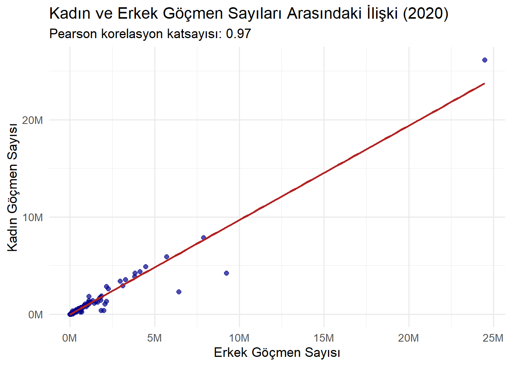
Grafik, her bir noktanın bir ülkeyi temsil ettiği ve X ekseninde erkek, Y ekseninde kadın göçmen sayılarının gösterildiği bir dağılım (scatter) grafiğidir.
Noktaların regresyon çizgisine çok yakın dağılması, değişkenler arasında güçlü ve doğrusal bir ilişki olduğunu gösterir.
Pearson korelasyon katsayısı 0.97 olarak bulunmuştur. Bu, kadın ve erkek göçmen sayılarının ülkeler bazında büyük ölçüde birlikte arttığını ve aralarında pozitif yönlü, çok güçlü bir korelasyon olduğunu gösterir.
Bu durum, göçmen kabul eden ülkelerde genellikle her iki cinsiyetin de benzer oranlarda temsil edildiğini işaret eder.
Sonuçlar ve Ana Çıkarımlar
Genel Bulgular (Dünya Geneli)
ABD lider konumda: Yaklaşık 50.6 milyon göçmenle en çok göç alan ülkedir. Almanya’nın 3 katı kadar göçmene sahiptir.
Avrupa ülkeleri göç merkezi: Almanya, Birleşik Krallık, Fransa, İtalya, İspanya gibi ülkeler göçmen sayısında üst sıralardadır. Bu ülkelerde iş gücü ve sığınma politikaları etkili olmuştur.
Körfez ülkelerinde erkek göçmen yoğunluğu:
Suudi Arabistan (%68 erkek)
BAE (%74 erkek)
Bu ülkelerde göçmenlerin çoğu geçici işçi niteliğindedir.
Kadın-erkek dağılımı genellikle dengeli:
Dünya genelinde: %51.9 erkek, %48.1 kadın
Türkiye özelinde: %50.7 erkek, %49.3 kadın
Bu denge, aile temelli göç ve insani göçlerin varlığına işaret eder.
Göçmenler çoğunlukla 20–39 yaş aralığında:
Bu yaş grubu, toplam göçmen stokunun en büyük kısmını oluşturmaktadır. Çalışma, eğitim ve ekonomik nedenlerin ön planda olduğunu göstermektedir.
🇹🇷 Türkiye Özelinde Bulgular
Göçmen sayısında keskin artış:
1990–2010: Göçmen stoku sabit (~1.3M)
2010–2020: Göçmen sayısı 6.1 milyona ulaştı
➤ Bu artışın başlıca nedeni Suriye iç savaşıdır.
Yaş dağılımı:
En çok göçmen 25–34 yaş aralığında.
0–14 yaş arası çocuk göçmen oranı da yüksektir.
65 yaş üstü göçmen sayısı düşüktür.
➤ Genç ve aile göçü profili baskındır.
Cinsiyet dengesi çok yakın:
Türkiye’deki göçmenlerin neredeyse yarısı kadındır. Bu, Türkiye’nin insani ve aile bazlı göç kabulü yaptığını göstermektedir.
Trend ve Korelasyon Çıkarımları
1990–2020 arasında dünya genelindeki göçmen sayısı %85 artış göstermiştir (152 milyondan 280 milyona).
2024 yılı tahmini: 286 milyon (doğrusal regresyon modeliyle)
Kadın ve erkek göçmen sayıları arasında yüksek korelasyon: Pearson katsayısı 0.97
➤ Cinsiyetler arasında göç eğilimleri ülkeler genelinde birlikte artmaktadır.